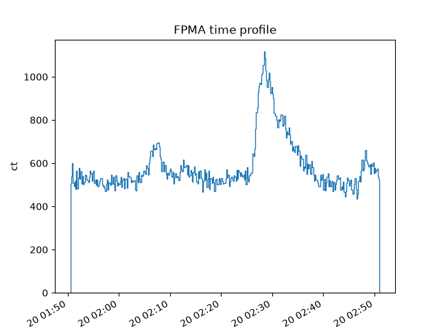
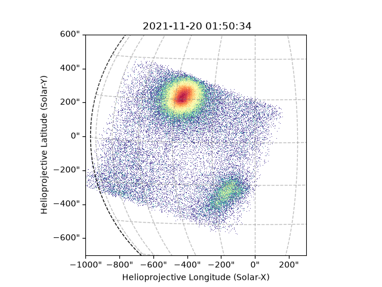

Note
Go to the end to download the full example code.
Using NuSTAREvt
This example shows the useulness of the ~jdhsrpy.nustar_evt.NustarEvt class.
import astropy.units as u
from astropy.visualization import time_support
import matplotlib
import matplotlib.pyplot as plt
from parfive import Downloader
from jdhsrpy.nustar_evt import NustarEvt, draw_grid
from jdhsrpy.visualize import time_profile_plot
matplotlib.use('Agg')
Download an example “sunpos” NuSTAR EVT file.
url = [
"http://foxsi.space.umn.edu/data/tmp/jdhsr/test_nustar_data/nu20619003001A06_cl_sunpos.evt",
]
file = Downloader.simple_download(url)
Files Downloaded: 0%| | 0/1 [00:00<?, ?file/s]
nu20619003001A06_cl_sunpos.evt: 0%| | 0.00/42.0M [00:00<?, ?B/s]
nu20619003001A06_cl_sunpos.evt: 0%| | 99.3k/42.0M [00:00<00:58, 723kB/s]
nu20619003001A06_cl_sunpos.evt: 2%|▏ | 928k/42.0M [00:00<00:09, 4.56MB/s]
nu20619003001A06_cl_sunpos.evt: 6%|▌ | 2.61M/42.0M [00:00<00:04, 8.87MB/s]
nu20619003001A06_cl_sunpos.evt: 16%|█▌ | 6.81M/42.0M [00:00<00:01, 20.3MB/s]
nu20619003001A06_cl_sunpos.evt: 36%|███▌ | 15.0M/42.0M [00:00<00:00, 40.6MB/s]
nu20619003001A06_cl_sunpos.evt: 63%|██████▎ | 26.6M/42.0M [00:00<00:00, 64.9MB/s]
nu20619003001A06_cl_sunpos.evt: 90%|█████████ | 37.9M/42.0M [00:00<00:00, 80.1MB/s]
Files Downloaded: 100%|██████████| 1/1 [00:01<00:00, 1.26s/file]
Files Downloaded: 100%|██████████| 1/1 [00:01<00:00, 1.26s/file]
Use the class to load in and work with the file.
nustar_object = NustarEvt(evt_filename=file[0])
The first interesting thing might be to plot the counts time profile.
Notice that the values here are unit aware.
counts, times = nustar_object.count_time_profile_array()
time_support(format='unix_tai')
plt.figure()
time_profile_plot(times, counts)
plt.title(f"FPM{nustar_object.fpm} time profile")
plt.xticks(rotation=30, ha='right')
plt.ylabel(f"{counts.unit:latex}")
plt.xlabel("Time")
plt.show()

The class also makes it easy to produce images from the EVT file.
There are three user methods that can be used, two to save time and the final more general one.
The general one allows a user to specific the bounds for the map.
# obtain a Sunpy map object of the NuSTAR observation
bottom_left = [-1000, -700] << u.arcsec
top_right = [300, 600] << u.arcsec
m = nustar_object.nustar_map(bottom_left, top_right)
# now use it in plotting, this is now just Sunpy API stuff
fig = plt.figure()
ax = fig.add_subplot(projection=m)
m.plot(axes=ax)
draw_grid(m, ax)
plt.show()

The other two save time with field_of_view_map and full_disk_map
each returning a map bounded by the field of view and the full solar
disk, respectively.
Total running time of the script: (0 minutes 9.613 seconds)